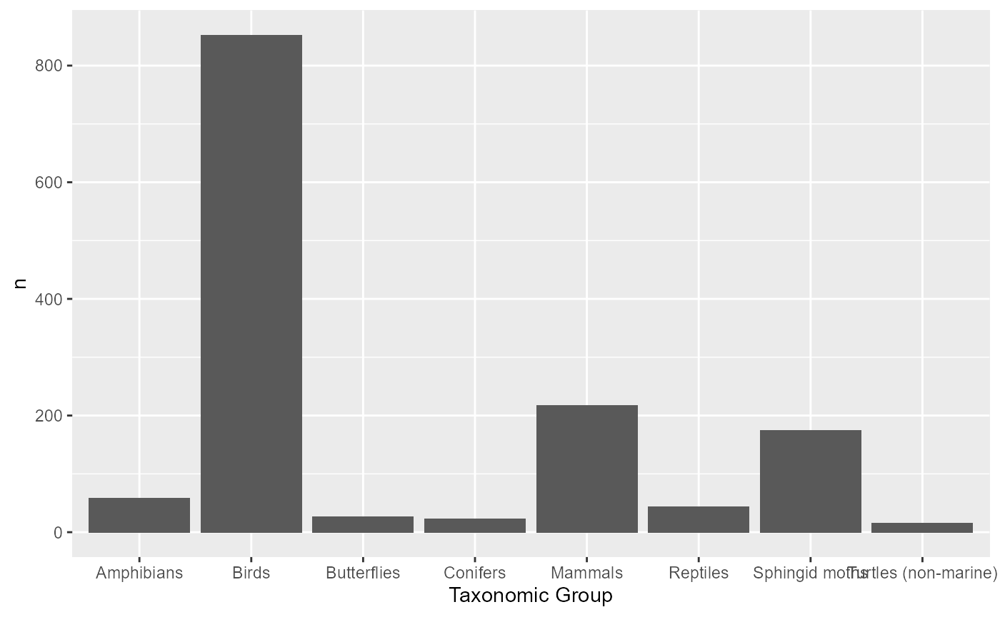

nepal_wildlife.RmdFirst, load the required packages:
library(Nepalwildlife)
library(dplyr)
#>
#> Attaching package: 'dplyr'
#> The following objects are masked from 'package:stats':
#>
#> filter, lag
#> The following objects are masked from 'package:base':
#>
#> intersect, setdiff, setequal, union
library(ggplot2)Let’s take a look at the dataset:
# check the bottom and top rows
head(nepal_wildlife)
#> # A tibble: 6 x 4
#> `Scientific Name` `Common Name` Family `Taxonomic Grou~
#> <chr> <chr> <chr> <chr>
#> 1 Apus apus Common Swift Apodidae Birds
#> 2 Eurystomus orientalis Eastern Broad-Billed Roller Coraciidae Birds
#> 3 Calidris minuta Little Stint Scolopacid~ Birds
#> 4 Saxicoloides fulicat~ Indian Robin Muscicapid~ Birds
#> 5 Falco tinnunculus Common Kestrel Falconidae Birds
#> 6 Abroscopus schistice~ Black-Faced Flycatcher-War~ Sylviidae Birds
tail(nepal_wildlife)
#> # A tibble: 6 x 4
#> `Scientific Name` `Common Name` Family `Taxonomic Group`
#> <chr> <chr> <chr> <chr>
#> 1 Juniperus communis Common Juniper Cupressaceae Conifers
#> 2 Larix potaninii Chinese Larch Pinaceae Conifers
#> 3 Juniperus pingii Ping's Juniper Cupressaceae Conifers
#> 4 Juniperus tibetica Tibetan Juniper Cupressaceae Conifers
#> 5 Cedrus deodara Deodar Pinaceae Conifers
#> 6 Juniperus squamata Flaky Juniper Cupressaceae Conifers
# take a glimpse at the overall dataset
glimpse(nepal_wildlife)
#> Rows: 1,409
#> Columns: 4
#> $ `Scientific Name` <chr> "Apus apus", "Eurystomus orientalis", "Calidris m...
#> $ `Common Name` <chr> "Common Swift", "Eastern Broad-Billed Roller", "L...
#> $ Family <chr> "Apodidae", "Coraciidae", "Scolopacidae", "Muscic...
#> $ `Taxonomic Group` <chr> "Birds", "Birds", "Birds", "Birds", "Birds", "Bir...We can calculate the number of species for each Taxonomic Group, and create a bar chart out of it
nepal_wildlife %>%
group_by(`Taxonomic Group`) %>%
summarize(n= n()) %>%
ggplot(aes(x = `Taxonomic Group`, y = n)) +
geom_bar(stat = "identity")
#> `summarise()` ungrouping output (override with `.groups` argument)
How many species have the common name leopard?
nepal_wildlife %>%
select(c(`Common Name`, Family)) %>%
mutate(has_leopard = stringr::str_detect(`Common Name`, stringr::regex("leopard", ignore_case = TRUE))) %>%
filter(has_leopard == TRUE)
#> # A tibble: 4 x 3
#> `Common Name` Family has_leopard
#> <chr> <chr> <lgl>
#> 1 Leopard Felidae TRUE
#> 2 Snow Leopard Felidae TRUE
#> 3 Clouded Leopard Felidae TRUE
#> 4 Leopard Cat Felidae TRUEAmong these, Leopard and Snow Leopard are considered to be big cats.